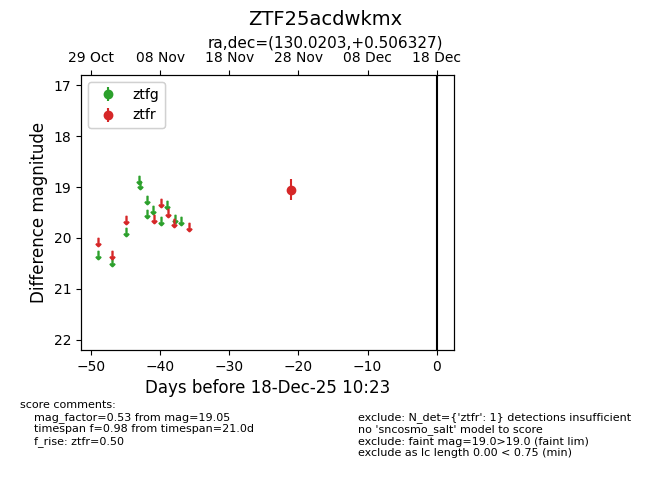
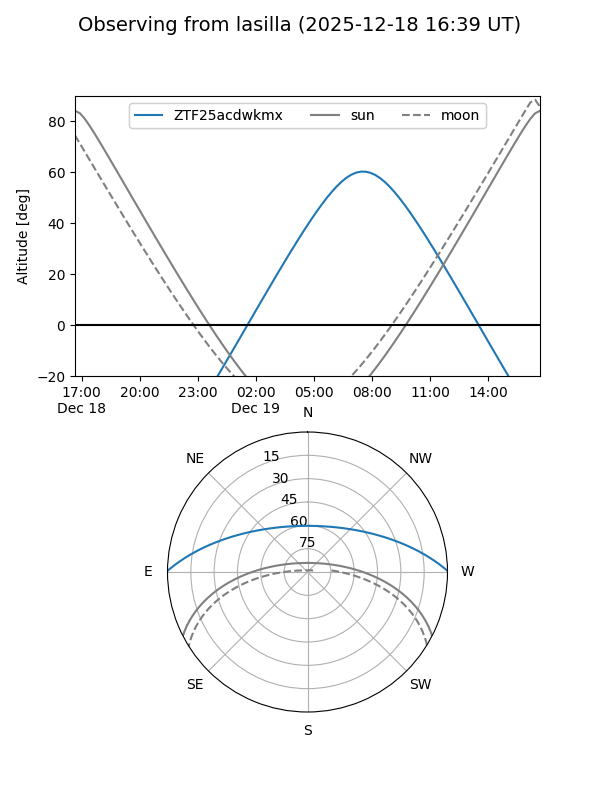
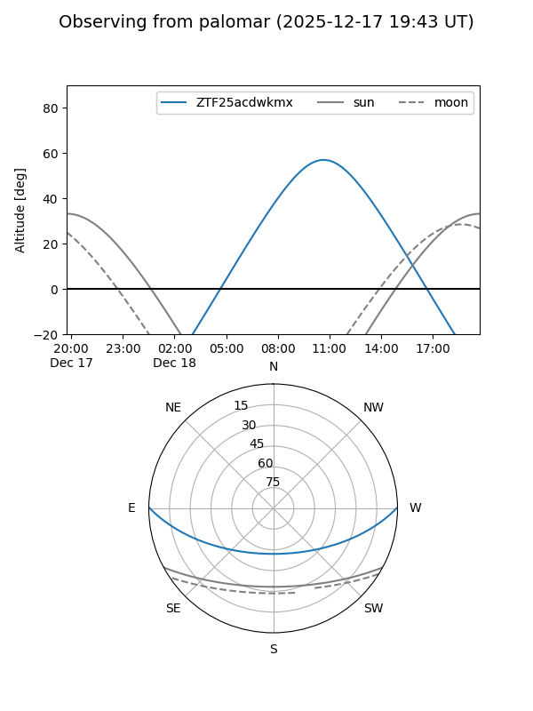

ZTF25acdwkmx
Target ZTF25acdwkmx at 2025-12-18 11:17
Aliases and brokers:
FINK: fink-portal.org/ZTF25acdwkmx
Lasair: lasair-ztf.lsst.ac.uk/objects/ZTF25acdwkmx
ALeRCE: alerce.online/object/ZTF25acdwkmx
alt names
ZTF25acdwkmx (ztf,fink_ztf)
Coordinates:
equatorial (ra, dec) = 130.0203,+0.50633
equatorial (HMS+DMS) = 08:40:04.87,+00:30:22.78
galactic (l, b) = (225.6183,+24.22268)
Photometry
last ztfr=19.05
1 ztfr detections
Lightcurve

Visibility


Additional plots